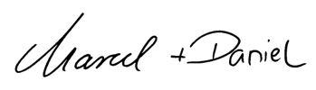

We are creators of UX Design Culture.
We are passionate about UX Design Operations. And we are excited to share our mindset and expertise with others - as coaches, consultants, or speakers.
We are MUDX Design. Let's get to know each other ...
We are MUDX Design. Let's get to know each other ...
With UX Design Operations we serve organizations to focus their work on valueable and good design - by taking care of the rest.
Therefore we rely on three main pillars of success:
Our Expertise
What we love to do:
- Consult companies in building up UX Design Operations or professionalize individual design workflows and amplify their investments in design.
- Train people in understanding and applying UX Design - in general, and for specific topics like Research, Prototyping, Testing, Design Systems, Accessibility, or Measurement.
- Speak about our experiences and share our stories with others - as a keynote, workshop, or in a personal talk.
We are looking forward to hearing from you and getting to know each other better in a personal conversation.
Interested in learn how to efficiently create exciting user experiences?
Weather you are Product Owner or Manager, Designer, Developer or a different role. Design is teamwork. And good design requires everybody to understand and do User Experience Design themselves. Do the right things, and do it right!
Within our interactive UX Practitioner training, we train the right understanding and practical application of UX Design from researching and defining opportunities, prototyping and testing solution ideas, and implement and measure great user experiences.
Learn more about our UX Practitioner training
Request a group trainingHi, I am Marcel
I am now working for over 12 years at an automotive manufacturer, where I studied Business Administration and Engineering as a combined on-the-job training. I am passionate about empowering the organization with modern UX tools and how to use them effectively. As a member of the Marketing team, I am committed to elevating both the visual appearance as well as the user experience on a corporate level and driving the design strategy of the brand forward.
As a self-employed freelancer since 2008, I already became enthusiastic about web development and design very early. Nowadays I am experienced in different areas of UX Design and Web Development - either using it myself or guide experts through my deep expertise. Especially by building up the corporate UX strategy and organizations within different companies with Daniel for the last years.
And this is me, Daniel
My passion is strong brands. I want to help shape them and use the power to create user-centered products. I started my professional career at Borussia Dortmund in the successful years 2011-2014 in the online sector. There I was mainly responsible for the most important platforms BVB.de and Shop.BVB.de
After an emotionally influential time, my journey went to Stuttgart, where I have been working for six years at an automotive manufacturer. I started in the online store department, I first worked together with Marcel to establish UX Design Operations and later used the benefits as Senior Product Manager Mobility.
Our story
In our last four years, we have learned that we can solve many different user experience issues better than anyone else through pairing. Our strengths and weaknesses complement each other ideally. We have learned a lot over the past few years. And have been able to build and evolve an enterprise-wide user experience culture for digital products from zero.
To explain this in a little bit more detail: We closely work together as a team for 7 years and we drive User Experience mindset and working culture within digital product organizations at scale. Mostly for customer-facing websites and applications. Currently, we are establishing a UX Frameworks based on the three main pillars: Firstly as Leads of the ”UX Design Operations Team” we take over the responsibility to enable the product organization to follow the corporate User Experience vision and strategy – through common design and working principles. As a team, we take ownership of the User Experience process and enablement to use the right tools and methods. Secondly, we establish a design culture by taking responsibility for different roles within the UX Community. Within guild meetings, we share knowledge, success stories, and also empower collaboration. Furthermore, we use the format of an internal UX Academy to teach everyone in different UX-related topics, e.g. understanding the basics of User Experience Design or special dicipline deep dives. And thirdly, we build up a scalable Design System to ensure an efficient and high qualitative code and design workflow. And create digital experiences we are proud of.